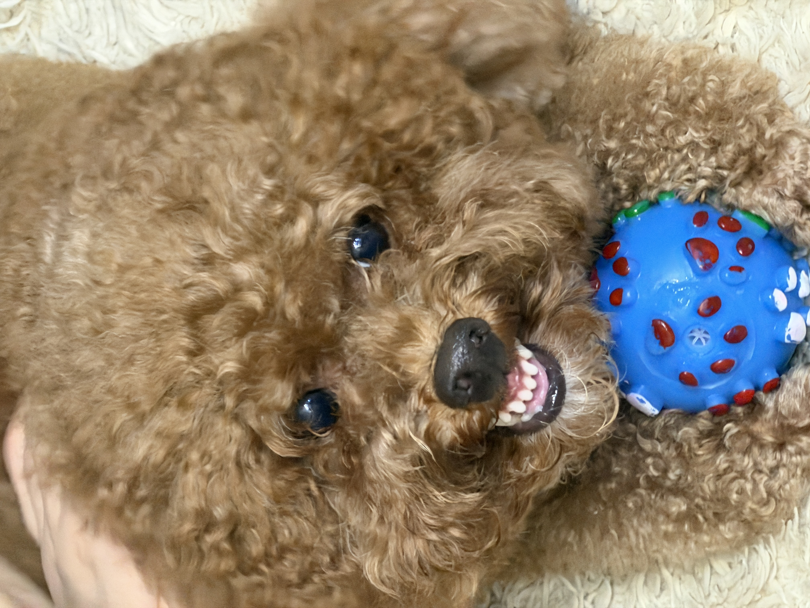

I came to the U.S. in 2019 to pursue my college degree in Economics in Lake Forest, Illinois. After graduating, I moved to New York to start my career and spent two and a half years to work at a marketing agency as a Biddable Account Manager. I realized I wanted to do something more creative, that's why I followed a different path to study UI/UX. Now, I'm in the IXD program at Pratt Institute and I'm expected to graduate in 2028. This semester, I'm taking three classes and they are all core classes. More details about the classes are in the Schedule page, which can be accessed via the link here.
Some of my hobbies are playing badminton, taking pictures using my Fuji Film, and raving. I also love matcha and enjoy trying out restaurants, especially Asian restaurants. Below is the list I highly recommend for everyone to try at least once:
I'm a dog person, and I have a dog back home in Vietnam. His name is Xiu, and he is a 4-year-old puddle. He will turn 5 in November, which means he becomes even older than me. I have a lot of fun pictures about him in this page, but the one below is the funniest because he is literally smiling on the camera.

This is him on his 4th birthday. You can click on the image and it will take you to his Instagram, which has even more pictures of him.
Besides my studies, I'm also a member of the Vietnamese Student Association in New York. Last year, I served as the Head of Media for our Halloween event, which I collaborated with the design team to build concepts, making posters, and even took charge of finding artists for the event. More details about the event can be found on this page.